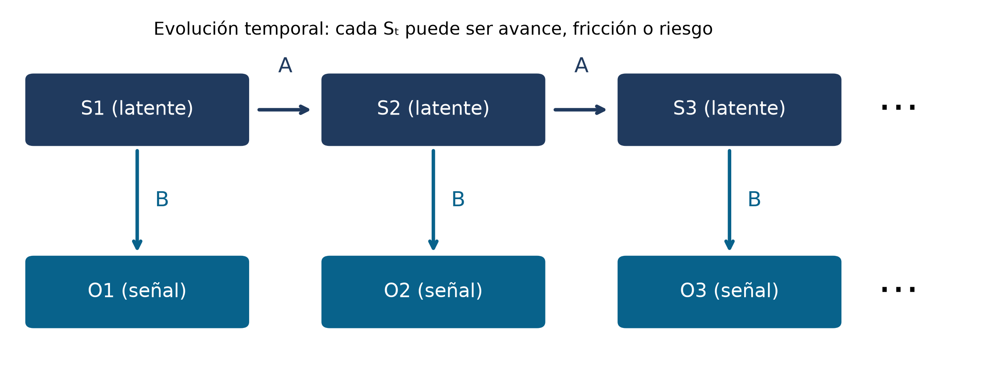
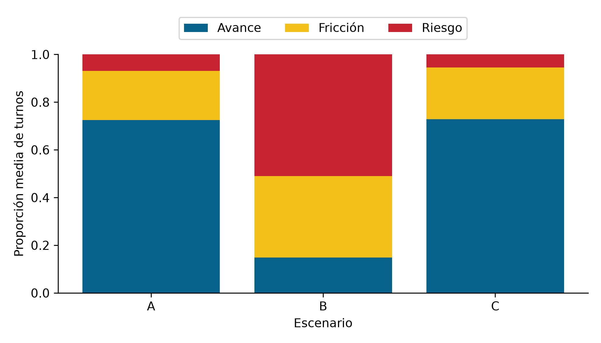
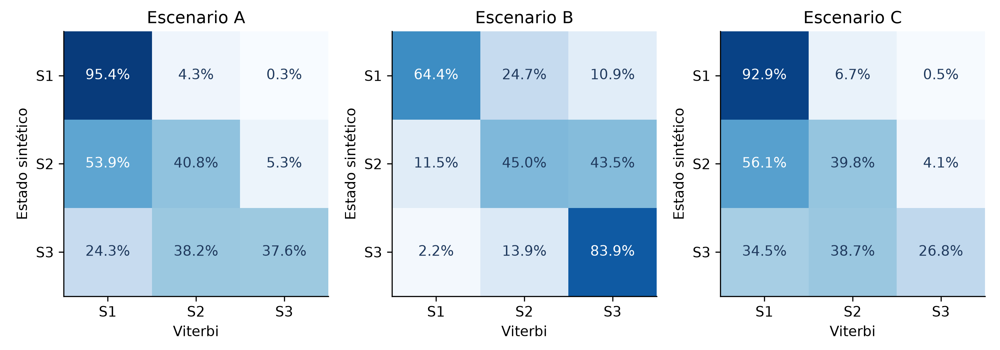
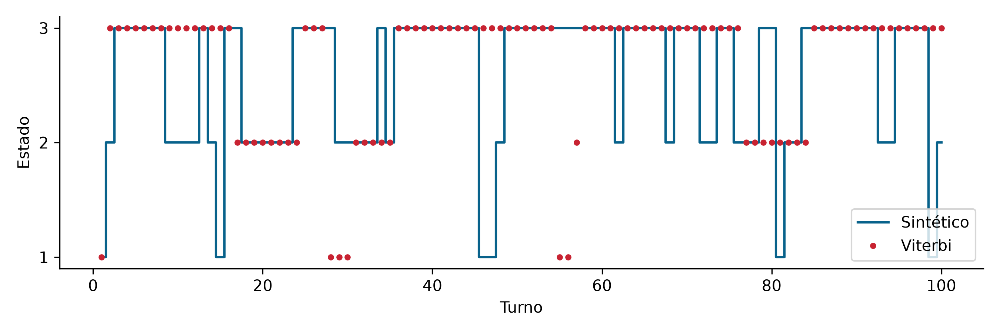
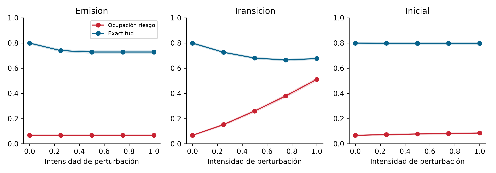

ESTADOS CONVERSACIONALES LATENTES Y RIESGO DE ABANDONO
Un banco de simulación con Modelos Ocultos de Markov
Actividad didáctica 2 · Módulo 2
Sara Colorado Gil
Ingeniería de Software y Datos
Asignatura: Simulación
Docente: Julián Andrés Loaiza López
Medellín, Antioquia · Noviembre de 2026
Investigación computacional con datos sintéticos
1. Resumen e introducción
Las interacciones con agentes de inteligencia artificial producen señales observables, pero sus regímenes de avance y fricción no se identifican directamente a partir de un único turno. Este trabajo construye un Modelo Oculto de Markov discreto de tres estados y cinco categorías para estudiar, en condiciones sintéticas, la inferencia de un régimen de riesgo de abandono. Se implementan muestreo categórico, Forward escalado y Viterbi logarítmico en Python y JavaScript, sin entrenamiento con conversaciones reales. Se comparan tres escenarios con 1.000 réplicas de 100 turnos cada uno y se realizan 3.750 réplicas adicionales de sensibilidad. La ocupación media del estado de riesgo es 6,94 % en interacción estable, 50,93 % con fricción y 5,41 % con recuperación. Las exactitudes de decodificación son 80,18 %, 67,66 % y 77,76 %, respectivamente. Los intervalos se estiman entre réplicas para respetar la dependencia temporal. La contribución consiste en un banco experimental auditable que separa verdad sintética, señal observable e inferencia, verifica la concordancia entre lenguajes y cuantifica la sensibilidad a transición, emisión y distribución inicial. Los resultados caracterizan los supuestos del simulador y no validan una tasa de abandono real. Se requiere un estudio posterior con anotaciones humanas, eventos terminales y evaluación externa para estimar utilidad operativa.
Palabras clave: modelos ocultos de Markov; analítica conversacional; simulación estocástica; Viterbi; reproducibilidad.
1.1 Motivación y alcance
Un agente puede recibir una confirmación después de una aclaración, una objeción tras varios avances o una pausa durante una interacción útil. Una señal aislada no determina el régimen que la produjo. El modelado secuencial permite combinar evidencia local con persistencia temporal, mientras hace explícitos los supuestos que conectan ambos niveles.
El problema se aborda como una investigación computacional controlada. La estudiante conoce los estados generados y puede medir errores de inferencia; esta ventaja experimental no está disponible de forma automática en registros reales. El término «riesgo» nombra un régimen operacional del modelo, caracterizado por mayor emisión de objeciones y pausas. No constituye un diagnóstico emocional ni una probabilidad calibrada de abandono efectivo.
La literatura reciente ofrece modelos de satisfacción guiados por esquemas [7], dinámicas temporales mediante procesos de Hawkes [8] y rúbricas interpretables con modelos de lenguaje [10]. Estas propuestas motivan estudiar secuencias e interpretabilidad, pero sus objetivos y conjuntos de datos difieren de los de este experimento. No se comparan sus puntuaciones con la exactitud sintética aquí obtenida.
2. Problema, preguntas y contribución
2.1 Formulación
Se dispone de una secuencia ordenada de categorías conversacionales. Se desea calcular su verosimilitud bajo un modelo declarado e inferir la trayectoria de tres regímenes latentes: avance positivo, fricción y riesgo. La unidad temporal es un turno categorizado del usuario. El modelo no genera respuestas del agente ni intenta comprender texto libre; las frases web son únicamente ejemplos asociados a las categorías.
2.2 Preguntas de investigación
P1. ¿Cómo representar la evolución de una conversación con un agente de IA mediante un HMM? P2. ¿Cómo influyen las matrices de transición y emisión en la simulación y la inferencia de riesgo? P3. ¿Qué tan reproducible y sensible es el modelo al modificar condiciones iniciales, matrices y escenarios?
2.3 Objetivo y aporte verificable
El objetivo es construir y evaluar un HMM categórico reproducible, con implementación matemática transparente y laboratorios accesibles desde el navegador. El aporte concreto es un banco de pruebas con matrices públicas, réplicas exportadas, algoritmos independientes en dos lenguajes y tres familias de perturbación controlada. Puede refutarse una concordancia declarada ejecutando los casos de referencia o regenerando las tablas.
La hipótesis experimental es que aumentar la persistencia en S3 incrementará su ocupación, mientras que reducir la información de las emisiones limitará la reconstrucción de los estados. Se evalúa esta hipótesis dentro del generador propuesto; no se la presenta como ley del comportamiento humano. Un escenario de recuperación representa una matriz alternativa y no una intervención causal probada.
2.4 Criterio de éxito y delimitación
El éxito técnico requiere probabilidades válidas, algoritmos numéricamente estables, repetibilidad de secuencias, concordancia entre implementaciones y trazabilidad de resultados. El éxito científico consiste en interpretar los límites de esas comprobaciones. Un buen resultado en datos generados por el mismo modelo no demuestra desempeño en usuarios nuevos ni capacidad de prevenir una desconexión real.
3. Estado del arte: fundamentos y rupturas
Se realizó una revisión dirigida, no sistemática, con búsquedas de HMM, dialogue breakdown, user satisfaction y conversational dynamics en ACL Anthology, PMLR, JMLR y páginas editoriales. La ventana considerada es del 5 de noviembre de 2021 al 5 de noviembre de 2026. Se incluyeron once publicaciones de 2022–2025 con metadatos y resúmenes verificables en fuentes originales. No se afirma indexación individual en Scopus o Web of Science porque no se consultaron sus registros.
| Ref. / año | Método real | Relación y límite |
|---|---|---|
| [1] 2023 | HMM: aprendizaje con consultas condicionales | Delimita la dificultad de aprender parámetros; aquí se fijan. |
| [2] 2023 | HMM: observaciones ausentes | Advierte que una pausa categórica no representa datos faltantes. |
| [3] 2023 | HMM: emisiones en espacios topológicos | Muestra extensiones; se conserva una versión categórica auditable. |
| [4] 2022 | Contexto: aprendizaje semisupervisado, no HMM | La detección de fallos necesita evaluación con etiquetas. |
| [5] 2022 | Contexto: detección de ruptura, no HMM | Motiva usar historia conversacional; estudia conversaciones reales. |
| [6] 2022 | Contexto: taxonomía de errores, no HMM | Las categorías exigen criterios de anotación, no emociones inferidas. |
Los trabajos [1]–[3] utilizan HMM, pero estudian aprendizaje, ausencia de observaciones o extensiones de emisiones. No predicen abandono conversacional con las matrices aquí usadas. Los trabajos [4]–[6] aportan contexto para identificar fallos de diálogo y definir anotaciones; no se les atribuye el uso de HMM.
Esta separación evita presentar la coincidencia temática como evidencia de un método común. La decisión de utilizar tres estados y cinco símbolos es un supuesto pedagógico del presente proyecto. La revisión no demuestra que esa cardinalidad sea óptima para conversaciones reales ni que un HMM supere a un clasificador de texto.
3. Estado del arte: satisfacción y vacío experimental
| Ref. / año | Enfoque | Aplicación al diseño |
|---|---|---|
| [7] 2023 | Contexto: esquema y satisfacción, no HMM | Separar cumplimiento de tarea y régimen latente. |
| [8] 2023 | Contexto: proceso de Hawkes, no HMM | Justifica estudiar dependencia temporal con otro modelo. |
| [9] 2024 | Contexto: evaluación contrafactual, no HMM | Motiva evaluar desbalance y robustez. |
| [10] 2024 | Contexto: LLM y rúbricas SPUR, no HMM | La interpretabilidad no exige diagnosticar estados psicológicos. |
| [11] 2025 | Contexto: estrategia y recuperación PRAISE, no HMM | Ofrece contraste con enfoques basados en lenguaje natural. |
SG-USM [7] modela satisfacción con esquemas de tareas, mientras ASAP [8] incorpora dinámica mediante un proceso de Hawkes. CAUSE [9] examina robustez ante insatisfacción y composición de datos. SPUR [10] extrae señales mediante rúbricas con modelos de lenguaje y PRAISE [11] combina estrategias y recuperación. Son antecedentes de contexto y evaluación; ninguno se usa para justificar numéricamente las probabilidades sintéticas.
3.1 Vacío que aborda esta actividad
Entre los antecedentes consultados no se identificó un banco didáctico con este conjunto específico de tres regímenes, controles web, generación compartida Python/JavaScript y pruebas de referencia. El aporte se limita a cubrir esa necesidad experimental y docente. No se reclama una primicia mundial ni una superioridad algorítmica respecto de los métodos publicados.
3.2 Límites de la revisión
La selección prioriza accesibilidad y relación metodológica; puede omitir investigaciones comerciales o artículos con terminología diferente. Se verificaron títulos, autores, año y DOI cuando está disponible. Las conclusiones de la revisión se apoyan en el propósito y los métodos declarados en los resúmenes, sin reproducir resultados numéricos ajenos. Futuros trabajos deben ampliar la búsqueda, revisar textos completos y documentar criterios de selección con mayor exhaustividad.
La consecuencia práctica es moderar la afirmación central: este trabajo demuestra cómo verificar un mecanismo probabilístico propuesto. La transferencia a conversaciones atendidas por agentes requiere evidencia adicional, recogida y anotada bajo un protocolo independiente.
4. Marco teórico y definición operacional
4.1 Estados y observaciones
Sea S={S1,S2,S3}. S1 representa un régimen de avance con alta emisión de confirmaciones e información; S2 representa fricción con predominio de aclaraciones; S3 representa riesgo con mayor emisión de objeciones y pausas. Estos nombres describen distribuciones del modelo y no estados mentales diagnosticados. V={confirmación, información, aclaración, objeción, pausa}; los índices de implementación son 0–4.
Cada turno recibe exactamente una categoría. En un registro futuro con señales simultáneas se necesitaría un protocolo de prioridad o un modelo multivariado. Una pausa se define como interrupción temporal observada dentro de una sesión que continúa; no es un símbolo de abandono terminal. Las secuencias de esta actividad siempre finalizan por horizonte administrativo T=100.
4.2 Supuestos y factorización
La cadena es de primer orden y homogénea dentro de cada escenario. Dado el estado, la emisión es categórica e independiente del resto del historial. Se muestrea primero el estado y después su observación. Con convención fila-estocástica, A es 3×3, B es 3×5 y π es un vector de tres probabilidades; todas las filas y π suman 1.
Las duraciones internas de cada estado siguen implícitamente una distribución geométrica. El supuesto facilita la simulación, pero puede ser inadecuado si el riesgo depende de cuánto tiempo lleva la conversación en fricción. Un modelo semi-Markov permitiría duraciones distintas.
4.3 Representación de dos capas

Un futuro modelo con abandono efectivo debería incorporar un estado absorbente terminal o un mecanismo de supervivencia, junto con su verosimilitud y censura. No basta con renombrar «pausa» como «desconexión» manteniendo el resto del generador.
4. Parámetros y escenarios sintéticos
| Escenario / origen | A S1 | A S2 | A S3 |
|---|---|---|---|
| A / S1 | 0.88 | 0.10 | 0.02 |
| A / S2 | 0.35 | 0.55 | 0.10 |
| A / S3 | 0.20 | 0.30 | 0.50 |
| B / S1 | 0.55 | 0.35 | 0.10 |
| B / S2 | 0.10 | 0.55 | 0.35 |
| B / S3 | 0.05 | 0.20 | 0.75 |
| C / S1 | 0.80 | 0.17 | 0.03 |
| C / S2 | 0.55 | 0.35 | 0.10 |
| C / S3 | 0.45 | 0.35 | 0.20 |
| Estado | Conf. | Info. | Aclar. | Objec. | Pausa |
|---|---|---|---|---|---|
| S1 | 0.55 | 0.30 | 0.10 | 0.04 | 0.01 |
| S2 | 0.12 | 0.20 | 0.42 | 0.20 | 0.06 |
| S3 | 0.04 | 0.08 | 0.18 | 0.35 | 0.35 |
Distribución inicial: π=(0,70; 0,20; 0,10). Representa una mayoría inicial en avance y permite empezar en fricción o riesgo. Estos valores son supuestos, no frecuencias estimadas de conversaciones. La comparación principal mantiene B, π, horizonte y lista de semillas constantes; únicamente cambia A.
Cada celda de A describe la probabilidad de pasar de la fila actual a la columna siguiente. En A, la persistencia positiva es 0,88 y la entrada directa S1→S3 es 0,02. En B, S2→S3 aumenta a 0,35 y la persistencia en riesgo es 0,75. En C, S2→S1=0,55 y S3→S1=0,45 representan recuperación frecuente; S3→S3=0,20 limita la duración del riesgo.
Cada fila de B enumera las cinco señales posibles bajo un régimen. S1 asigna 0,55 a confirmar y 0,30 a pedir información; el 0,15 restante permite señales ambiguas. S2 asigna 0,42 a aclaración, pero conserva probabilidad de confirmar u objetar. En S3, objeción y pausa tienen 0,35 cada una. Ningún símbolo identifica por sí solo un estado: todos tienen probabilidades positivas en las tres filas.
El diseño intencionalmente conserva solapamiento. Por ello la inferencia no es perfecta aun cuando conoce el generador correcto. Al cambiar A también cambia la frecuencia de cada estado y la dificultad de decodificación; una diferencia de exactitud no debe atribuirse exclusivamente a un algoritmo distinto.
5. Metodología: generación e inferencia
5.1 Muestreo y reproducibilidad
El muestreo inverso categórico acumula las probabilidades de una fila y selecciona el primer intervalo que contiene un uniforme u∈[0,1). Python y JavaScript usan el mismo LCG32: x←(1664525x+1013904223) mod 2³² y u=x/2³². En cada turno consumen dos uniformes, uno para estado y otro para observación. Esta convención produce secuencias idénticas para la misma semilla, longitud y modelo.
La lista de 1.000 semillas procede de NumPy SeedSequence(20261105).generate_state(1000). Se reutiliza en los escenarios para comparaciones emparejadas. Las réplicas representan corridas pseudoaleatorias separadas; no se demuestra independencia matemática de los subflujos LCG. El generador es transparente y apropiado para este ejercicio, pero un estudio de alta exigencia debería contrastar PCG64 o generadores por contador.
5.2 Forward escalado
La normalización por c evita multiplicar cantidades que subdesbordan. f es el filtro P(Sₜ|O₁:ₜ), útil para una estimación causal del régimen actual. Si c=0, la secuencia es imposible y la log-verosimilitud es −∞. El filtro posterior a ese punto carece de interpretación.
5.3 Viterbi en logaritmos
Se guarda el argumento máximo para reconstruir la ruta al final; los empates favorecen el primer índice en ambos lenguajes. Se permite log(0)=−∞ y se rechazan trayectorias completamente imposibles. Viterbi maximiza la probabilidad conjunta de toda la trayectoria; no maximiza necesariamente la exactitud por turno ni constituye una predicción de abandono futuro.
validar(A,B,π) para cada réplica y escenario: s,o ← muestreo_categórico(modelo,T,semilla) logp,f ← Forward_escalado(o) v ← Viterbi_logarítmico(o) guardar métricas(s,v,f), semilla y escenario agrupar por réplica; calcular IC y exportar CSV
5. Diseño experimental y métricas
La comparación principal comprende 3 escenarios × 1.000 réplicas × 100 turnos: 300.000 observaciones. La sensibilidad comprende 3 factores × 5 niveles × 250 réplicas × 100 turnos: 375.000 observaciones adicionales. Se emplean los primeros 250 valores de la misma lista de semillas. No se entrenan parámetros ni se seleccionan modelos con el conjunto evaluado.
| Métrica | Definición / unidad |
|---|---|
| Ocupación Sᵢ | Número de turnos en Sᵢ dividido por T, por réplica. |
| Entradas a riesgo | Conteo de transiciones S1/S2→S3. Excluye iniciar en S3. |
| Duración de riesgo | Media de longitudes de episodios dentro de cada réplica con riesgo. |
| Exactitud | Fracción de etiquetas Viterbi iguales a la verdad sintética. |
| Confusión | Filas verdaderas, columnas estimadas; conteos y normalización por fila. |
| Brier filtrado | Media de (fₜ(S3)−1{Sₜ=S3})²; menor es mejor. |
Las réplicas sin riesgo tienen duración indefinida y se excluyen exclusivamente de esa media; se exporta su valor vacío y el resumen informa n válido. Los episodios que comienzan o terminan en el borde están censurados y se incluyen como longitudes observadas. Por ello su duración no es una estimación insesgada de la duración completa. Precisión y sensibilidad de S3 se guardan también por réplica cuando sus denominadores son positivos.
Se utiliza una fila por réplica como unidad de incertidumbre. Tratar 100.000 turnos correlacionados como observaciones independientes produciría intervalos artificialmente estrechos. Los IC describen variabilidad Montecarlo bajo parámetros fijos; no cubren incertidumbre sobre la validez de las matrices. Para n grande la aproximación t es razonable para medias de réplicas acotadas, sin garantizar normalidad exacta.
5.4 Perturbaciones controladas
Emisión: Bε=(1−ε)B+εU, con U uniforme de cinco símbolos. Transición: Aε=(1−ε)Aestable+εAfricción. Inicial: πε=(1−ε)π+ε(0,0,1). Se usan ε∈{0;0,25;0,50;0,75;1}. Cada perturbación preserva sumas y no negatividad. El generador y el decodificador principal comparten los parámetros perturbados; se exporta adicionalmente la exactitud de un decodificador nominal para explorar mala especificación.
6. Resultados: ocupación e inferencia
| Esc. | Riesgo medio | IC95 % riesgo | Exactitud | IC95 % exactitud |
|---|---|---|---|---|
| A | 6.94 % | [6.67 %, 7.21 %] | 80.18 % | [79.80 %, 80.56 %] |
| B | 50.93 % | [50.37 %, 51.49 %] | 67.66 % | [67.27 %, 68.06 %] |
| C | 5.41 % | [5.24 %, 5.58 %] | 77.76 % | [77.44 %, 78.07 %] |

El escenario B concentra aproximadamente la mitad del horizonte en S3, frente a menos del 7 % en A y C. El patrón es coherente con el incremento de permanencia en riesgo de 0,50 a 0,75 y con entradas más frecuentes desde los otros estados. El escenario C exhibe menor ocupación de riesgo que A, aunque su exactitud es también menor.
La comparación revela que ocupación y dificultad de inferencia son propiedades distintas. Las transiciones rápidas de C pueden reducir el beneficio de persistencia temporal; B produce una mezcla de estados y señales que dificulta separar especialmente los regímenes vecinos. Los valores representan recuperación de etiquetas definidas por el generador y no exactitud de una evaluación humana de conversaciones.
Los intervalos principales son estrechos porque se promedian 1.000 corridas. Esa precisión Montecarlo no vuelve empíricamente verdaderas las probabilidades de A o B. Aumentar las réplicas reduce el error de estimación del simulador; no corrige un modelo inadecuado para el sistema real. Como contraste analítico, se calculó (1/T)Σₜ πAᵗ para t=0,…,T−1. La ocupación esperada de S3 es A: 7.10 %, B: 51.57 %, C: 5.52 %. El archivo esperanza_exacta.csv conserva los tres estados; la cercanía a las medias Montecarlo es una comprobación independiente del muestreo.
6. Resultados: episodios y errores
| Esc. | Entradas S3 | Duración observada | Brier filtrado |
|---|---|---|---|
| A | 3.391 ± 1.754 | 1.997 ± 0.915 | 0.044 ± 0.023 |
| B | 13.081 ± 2.334 | 3.987 ± 1.049 | 0.165 ± 0.025 |
| C | 4.276 ± 1.978 | 1.232 ± 0.276 | 0.040 ± 0.018 |

La matriz de confusión desagrega la exactitud global. Una clase frecuente puede dominar el promedio; por eso es necesario observar qué fracción de cada estado se recupera. La diagonal indica aciertos condicionales al estado verdadero, mientras las celdas fuera de diagonal representan confusiones. Las filas suman uno después de normalizar, sin eliminar los errores de cada clase.

Los episodios breves pueden ser absorbidos por una trayectoria más persistente y algunas observaciones ambiguas cambian de interpretación según sus vecinas. Viterbi utiliza la secuencia completa: una etiqueta de un turno anterior puede cambiar cuando se incorpora nueva evidencia. Para monitoreo en tiempo real se debe consultar el filtro de Forward y evaluar su calibración, no interpretar el decodificador retrospectivo como una alerta anticipada.
6. Sensibilidad y comprobación experimental

| ε | Exactitud media | DE | IC95 % |
|---|---|---|---|
| 0.00 | 79.92 % | 6.15 % | [79.15 %, 80.68 %] |
| 0.25 | 73.96 % | 7.51 % | [73.03 %, 74.90 %] |
| 0.50 | 72.84 % | 8.31 % | [71.81 %, 73.88 %] |
| 0.75 | 72.84 % | 8.31 % | [71.81 %, 73.88 %] |
| 1.00 | 72.84 % | 8.31 % | [71.81 %, 73.88 %] |
Al pasar de B original a emisiones uniformes, la exactitud cambia de 79.92 % a 72.84 %. Con ε=1 las tres filas de B son idénticas, por lo que las observaciones no informan sobre el estado. Una exactitud todavía elevada puede deberse al predominio de S1 y a las probabilidades de transición, no a señales útiles.
Al desplazar π hacia inicio en S3, la ocupación media de riesgo cambia de 6.70 % a 8.51 % a lo largo de cien turnos. El horizonte finito retiene parte del efecto inicial, aunque la mezcla de la cadena lo diluye. La perturbación de transición conecta continuamente los escenarios estable y con fricción y cambia tanto la ocupación como la decodificación.
Las bandas de distintos niveles no son pruebas pareadas de diferencias. Puesto que se comparten semillas, una evaluación formal del contraste debe calcular el IC de diferencias por réplica. El CSV de sensibilidad permite hacerlo. Esta actividad interpreta tendencias descriptivas y no declara significancia causal, optimización de una política ni un umbral de alerta comercial.
7. Discusión y amenazas a la validez
7.1 Interpretación
El experimento confirma que el modelo representa regímenes persistentes con señales solapadas y permite estudiar qué información aporta cada componente. Forward evalúa y filtra; Viterbi reconstruye una trayectoria. La divergencia entre ocupación de riesgo y exactitud muestra que la métrica de inferencia no reemplaza el análisis de la dinámica. Un escenario puede tener poco riesgo y aun así resultar difícil de decodificar por sus cambios rápidos.
7.2 Validez de constructo
El nombre «riesgo de abandono» tiene un significado restringido: una fila de emisión con mayor probabilidad de objeción y pausa. No se observa un desenlace de abandono y no existe un horizonte futuro etiquetado. No se puede reportar precisión, AUC o tasa de abandono real a partir de p_s3. La clasificación de categorías en datos reales requeriría acuerdo entre anotadores y distinguir pausas, fallos técnicos, tarea resuelta y abandono.
7.3 Validez interna y estadística
El mismo modelo genera y decodifica, por lo que la evaluación representa un caso favorable de conocimiento correcto de parámetros. No se estudian todas las formas de mala especificación. La duración observada contiene censura de bordes, el IC t es aproximado y el LCG no ofrece independencia formal entre subflujos. Se mitigaron errores de implementación mediante enumeración exhaustiva, pruebas de ceros, secuencias largas y concordancia entre lenguajes.
7.4 Validez externa y comparabilidad
No hay corpus real, aprendizaje Baum–Welch, evaluación con usuarios ni pruebas por dominio o idioma. Los tres escenarios son hipótesis de dinámica y no grupos de tratamiento. Las métricas de los artículos revisados usan etiquetas y tareas distintas; no existe una comparación justa con sus puntuaciones. La revisión bibliográfica es dirigida y sus conclusiones no sustituyen una revisión sistemática.
7.5 Uso responsable de la inferencia
Una eventual aplicación debe ofrecer trazabilidad de señales y errores, proteger la privacidad y evitar atribuir emociones o intenciones personales a una trayectoria. Un sistema de apoyo podría sugerir aclaraciones; no debería penalizar al usuario por una etiqueta latente. Antes de ello se necesita evaluar calibración, costos de falsas alertas y posibles sesgos por estilo de escritura, accesibilidad o interrupciones de conectividad.
8. Conclusiones y trabajo futuro
8.1 Respuestas explícitas
P1. La conversación se representa mediante λ=(S,V,A,B,π), con estados operacionales, cinco señales categóricas, transiciones homogéneas y emisión condicionalmente independiente. El horizonte es fijo; no se modela un evento terminal. Esta definición permite generar una verdad sintética, calcular verosimilitud y reconstruir la trayectoria sin confundir observación con estado.
P2. A modifica ocupación y persistencia: el riesgo medio pasa de 6.94 % en interacción estable a 50.93 % con fricción. B controla la información observacional: la mezcla uniforme elimina las diferencias entre filas. La decodificación depende conjuntamente de ambos componentes y del desbalance. Estos resultados corresponden a los supuestos declarados.
P3. Las semillas y el orden de muestreo permiten repetir exactamente las secuencias. Los casos de referencia comprueban estados, observaciones y Viterbi idénticos entre Python y JavaScript, con tolerancias numéricas para Forward. Las perturbaciones convexas de transición, emisión e inicio muestran sensibilidad cuantificable sin romper las restricciones de probabilidad. Reproducibilidad computacional no equivale a validez empírica.
8.2 Metodología «usa, modifica y crea»
Usa: se retoman de las clases y la guía del docente la tupla HMM, la convención fila-estocástica y los problemas de evaluación y decodificación. Modifica: se sustituyen dominios ilustrativos por regímenes conversacionales, se definen categorías no psicológicas y se emplean algoritmos estables. Crea: se aportan las matrices, experimentos de sensibilidad, banco de concordancia y dos laboratorios con datos calculados. No se reutilizan las cifras ilustrativas del artículo guía como evidencia propia.
8.3 Próximos pasos
Se propone recolectar registros consentidos, definir eventos terminales y anotaciones, evaluar acuerdo interanotador y separar entrenamiento, validación y prueba por conversación. Después se podría comparar un clasificador sin memoria, HMM entrenado y modelos temporales más expresivos. La calibración del filtro y el análisis de anticipación deben preceder a cualquier afirmación sobre prevención de abandono.
El resultado final es una herramienta docente reproducible y una demostración experimental delimitada. El trabajo sostiene que el mecanismo propuesto funciona bajo sus propios supuestos, dejando explícita la evidencia que falta para utilizarlo como predictor de un desenlace real.
9. Referencias IEEE
[1] G. Mahajan, S. Kakade, A. Krishnamurthy y C. Zhang, “Learning Hidden Markov Models Using Conditional Samples,” Proc. COLT, PMLR, vol. 195, pp. 2014–2066, 2023. [En línea]. Disponible: https://proceedings.mlr.press/v195/mahajan23a.html. [Consulta: 5-nov-2026].
[2] B. Perets, M. Kozdoba y S. Mannor, “Learning Hidden Markov Models When the Locations of Missing Observations are Unknown,” Proc. ICML, PMLR, vol. 202, pp. 27642–27667, 2023. [En línea]. Disponible: https://proceedings.mlr.press/v202/perets23a.html. [Consulta: 5-nov-2026].
[3] A. B. Kashlak, P. Loliencar y G. Heo, “Topological Hidden Markov Models,” Journal of Machine Learning Research, vol. 24, no. 340, pp. 1–49, 2023. [En línea]. Disponible: https://www.jmlr.org/papers/v24/22-0685.html. [Consulta: 5-nov-2026].
[4] Q. Lin y H. T. Ng, “A Semi-supervised Learning Approach with Two Teachers to Improve Breakdown Identification in Dialogues,” Proc. AAAI, vol. 36, no. 10, pp. 11011–11019, 2022. doi: 10.1609/aaai.v36i10.21349. [En línea]. Disponible: https://ojs.aaai.org/index.php/AAAI/article/view/21349. [Consulta: 5-nov-2026].
[5] L. de Andrade e I. Paraboni, “Human-computer dialogue breakdown detection,” Linguamática, vol. 14, no. 1, pp. 17–31, 2022. doi: 10.21814/lm.14.1.354. [En línea]. Disponible: https://www.linguamatica.com/index.php/linguamatica/en/article/view/354. [Consulta: 5-nov-2026].
[6] R. Higashinaka, M. Araki, H. Tsukahara y M. Mizukami, “Classification of Utterances that Lead to Dialogue Breakdowns in Chat-oriented Dialogue Systems,” Journal of Natural Language Processing, vol. 29, no. 2, pp. 443–466, 2022. doi: 10.5715/jnlp.29.443. [En línea]. Disponible: https://www.jstage.jst.go.jp/article/jnlp/29/2/29_443/_article/-char/en. [Consulta: 5-nov-2026].
9. Referencias IEEE (continuación)
[7] Yue Feng, Yunlong Jiao, Animesh Prasad et al., “Schema-Guided User Satisfaction Modeling for Task-Oriented Dialogues,” Proceedings of the 61st Annual Meeting of the Association for Computational Linguistics (Volume 1: Long Papers), 2023. doi: 10.18653/v1/2023.acl-long.116. [En línea]. Disponible: https://aclanthology.org/2023.acl-long.116/. [Consulta: 5-nov-2026].
[8] Fanghua Ye, Zhiyuan Hu, Emine Yilmaz, “Modeling User Satisfaction Dynamics in Dialogue via Hawkes Process,” Proceedings of the 61st Annual Meeting of the Association for Computational Linguistics (Volume 1: Long Papers), 2023. doi: 10.18653/v1/2023.acl-long.494. [En línea]. Disponible: https://aclanthology.org/2023.acl-long.494/. [Consulta: 5-nov-2026].
[9] Amin Abolghasemi, Zhaochun Ren, Arian Askari et al., “CAUSE: Counterfactual Assessment of User Satisfaction Estimation in Task-Oriented Dialogue Systems,” Findings of the Association for Computational Linguistics: ACL 2024, 2024. doi: 10.18653/v1/2024.findings-acl.871. [En línea]. Disponible: https://aclanthology.org/2024.findings-acl.871/. [Consulta: 5-nov-2026].
[10] Ying-Chun Lin, Jennifer Neville, Jack Stokes et al., “Interpretable User Satisfaction Estimation for Conversational Systems with Large Language Models,” Proceedings of the 62nd Annual Meeting of the Association for Computational Linguistics (Volume 1: Long Papers), 2024. doi: 10.18653/v1/2024.acl-long.598. [En línea]. Disponible: https://aclanthology.org/2024.acl-long.598/. [Consulta: 5-nov-2026].
[11] Sangyeop Kim, Sohhyung Park, Jaewon Jung et al., “LLM-guided Plan and Retrieval: A Strategic Alignment for Interpretable User Satisfaction Estimation in Dialogue,” Proceedings of the 2025 Conference of the Nations of the Americas Chapter of the Association for Computational Linguistics: Human Language Technologies (Volume 1: Long Papers), 2025. doi: 10.18653/v1/2025.naacl-long.523. [En línea]. Disponible: https://aclanthology.org/2025.naacl-long.523/. [Consulta: 5-nov-2026].
[12] J. A. Loaiza López, «Modelos de Markov y Modelos Ocultos de Markov: guía explicativa», clases semanas 3–5, ejemplos HMM y artículo guía de redacción, material de la asignatura Simulación, IU Digital de Antioquia, 2026. Material suministrado por la estudiante; se usa como referencia pedagógica.
10. Anexos, reproducibilidad y sustentación
El repositorio conserva el Módulo 1 y añade una carpeta independiente. Los archivos CSV contienen 3.000 réplicas principales y 3.750 de sensibilidad, con sus semillas. resumen.csv y sensibilidad.csv incluyen media, desviación, mínimo, máximo, tamaño válido e IC95 %. manifiesto.json registra versiones y huellas SHA-256 de los resultados.
python -m pip install -r requirements.txt python -m unittest discover -s tests -v python src/experimentos.py node tests/concordancia.cjs python -m http.server 8000
Los comandos se ejecutan desde modulo-2/hmm-conversaciones. Para abrir los laboratorios use un servidor HTTP o GitHub Pages; abrirlos mediante file:// puede bloquear la carga del JSON. El archivo de referencia permite verificar que la misma semilla produce el mismo caso en ambos lenguajes. Los resúmenes web emplean IC normal 1,96 y la publicación usa t de Student; no se promete identidad de esos intervalos.
10.1 Acceso a implementaciones
Simulador conversacional · Laboratorio HMM · Artículo PDF · Réplicas CSV · Sensibilidad CSV · Código fuente.
10.2 Video de sustentación
El video debe grabarlo la estudiante y durar como máximo tres minutos. Se incluye un guion con tiempos y resultados reales. El enlace al video se incorporará después de grabarlo; no se presenta un enlace ficticio ni se afirma que está entregado.
10.3 Verificación y tareas de entrega
El registro QA.md documenta las comprobaciones realizadas. El PDF es complementario al informe web y debe cargarse en Canvas por la estudiante. El código LaTeX acompaña el manuscrito para Overleaf; su disponibilidad no implica que se haya compilado con TeX en este entorno. El PDF se genera con ReportLab a partir del mismo contenido estructurado y los mismos CSV.
La rúbrica se aborda mediante definición formal, pertinencia, matrices, simulación verificable y repositorio. La puntualidad y la sustentación dependen de la grabación y el envío final antes del 8 de noviembre de 2026 a las 11:59 p. m., hora de Colombia. No se anticipa una calificación ni se certifica una entrega en Canvas que no se ha realizado.